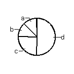
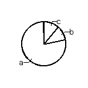
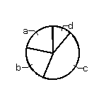
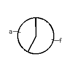
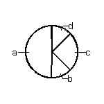
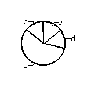

| 1. Do you use the lesstif HID?
| 2. If there were different menu resources files distributed with PCB, would you try them?
| 3. Do you customize your menu resource file?
| 4. If you do not costumize your menu resource file, it's because
| 5. Do you miss multi-key sequences from the GTK hid?
| 6. If the GTK hid supported multi-key sequences, would that change any of your previous answers?
| 7. Vendor (drill) mapping also uses a resource file.
|
| a | a | a | - | - | - | c
|
| d | a | c | f | a | - | d
|
| b | a | b | - | c | - | c
|
| d | c | d | a+f | c | - | e
|
| d | b | c | a+f | b | - | b
|
| d | a | a | a | d | - | c
|
| - | a | c | - | a | - | -
|
| c | a | b | f | a | - | c
|
| c | a | c | - | a | - | -
|
| 
| 
| 
| 
| 
|
| 
|
Legend
1. Do you use the lesstif HID? (select one)
a. yes, exclusively
b. yes, often
c. sometimes, rarely
d. never
2. If there were different menu resources files distributed with PCB,
would you try them? (select one)
a. yes, I'd give each variant a try before deciding which one to use
b. no, I'm fine with the default
c. I don't know what a menu resource file is
3. Do you customize your menu resource file? (select one)
a. yes, always (e.g. I have an own variant I use with all installation of
PCB)
b. yes, sometimes, rarely (e.g. I once had to do something repeatedly and
added a key binding for that)
c. never, I know where I'd perform the changes if I ever needed
them but defalts are good enough for now
d. never, I don't know what a menu resource file is
4. If you do not costumize your menu resource file, it's because (select
zero or more):
a. I don't need to
b. the file is too long
c. too many keys are taken, it's hard to find a free one
d. I don't like the format of the file
e. I don't like the idea of editing text config files, I want a GUI for
this
f. I don't want to diverge from the default settings (e.g. because of
potetial hassle at a later upgrade)
5. Do you miss multi-key sequences from the GTK hid? (select one)
a. yes, I'd prefer to use them over modifiers (ctrl, alt, shift)
b. yes, I'd use them together with the modifiers
c. maybe I'd use some
d. no, I prefer modifiers
e. I hate the idea so much that I'd even disable it compile time if that
was possible
f. N/A, don't know
6. If the GTK hid supported multi-key sequences, would that change any of
your previous answers? (fill in zero or more with a letter)
a. my new choice for 2. would be:
b. my new choice for 3. would be:
7. slightly off-topic: vendor (drill) mapping also uses a resource file.
Do you use this feature? (select one)
a. yes, often, many of my boards rely on vendor mapping and I maintain
my own resource files per vendor
b. yes, sometimes, rarely (e.g. I needed it once...)
c. no, I know how to use it but never needed it
d. no, I know the feature exists and I know where to look it up but I
don't really know what exactly it can do or why I should bother
e. no, I never heard about this feature
Downloads